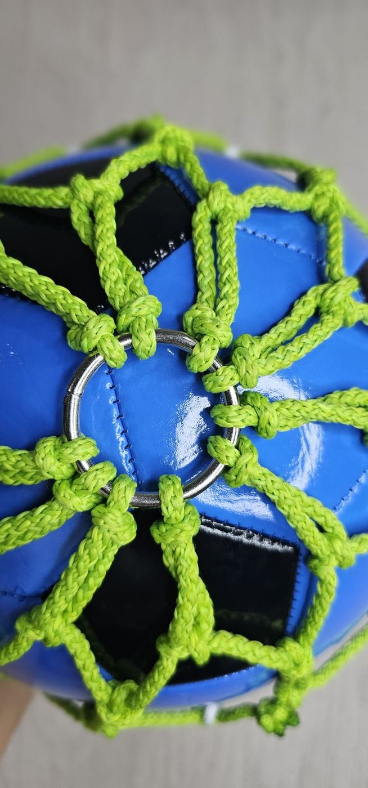
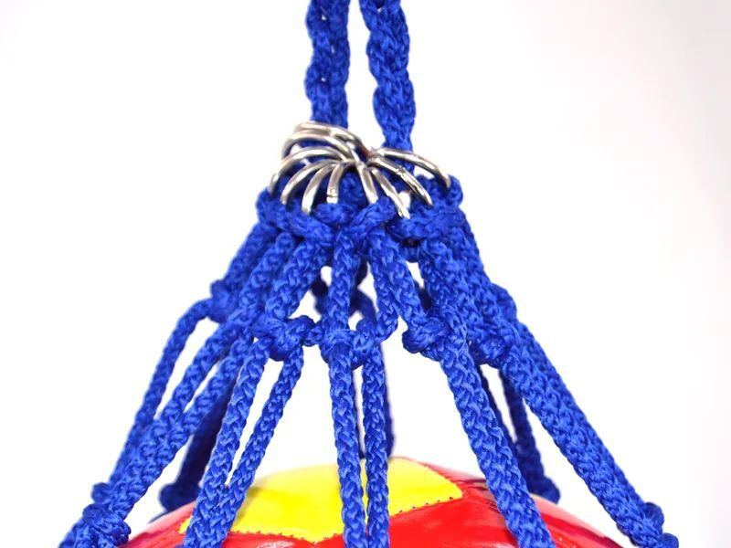

Una balonera es la red con la que guardas y cargas tus balones. La mayoría son de malla delgada que se rompe a la primera temporada. Las nuestras son diferentes: están hechas como una red de portería. Es, prácticamente, llevar un pedazo de portería profesional para guardar tu balón y llevarlo a todas partes.
Del mismo material que nuestras redes de portería
Usamos el mismo cordón y el mismo tejido a mano de nuestras redes para portería. Por eso aguantan el uso diario de una academia o un equipo, no solo un par de partidos.
Individual o tipo costal
- Individual: para un balón. Ideal para jugadores, regalos y kits de bienvenida.
- Costal: para varios balones. Para entrenadores, escuelas, clubes y academias.
Sirven para balones de fútbol, voleibol y básquetbol. Dinos cuántos balones quieres guardar y de qué deporte, y te confirmamos la medida.
En los colores que tú elijas

Los colores son personalizados: los de tu equipo favorito, los de tu negocio o los de tu escuela. Para un club o una empresa, una balonera en sus colores es un detalle que se usa y se ve en cada entrenamiento.
Qué mandarnos para cotizar
- Individual o costal, y cuántos balones.
- El deporte (tamaño del balón).
- Los colores.
- Cuántas piezas y la ciudad de entrega.
Más detalles en baloneras.
Preguntas frecuentes
¿De qué material son las baloneras de Grupo RC?
Del mismo material de nuestras redes de portería, tejidas a mano. Es prácticamente un pedazo de portería profesional para guardar tu balón.
¿Cuántos balones caben en una balonera?
Las hacemos individuales, para un balón, o tipo costal para varios. Dinos cuántos balones y de qué deporte, y te confirmamos la medida.
¿Las baloneras se pueden hacer en colores?
Sí. Los colores son personalizados: los de tu equipo, tu negocio o tu escuela.
¿Sirven para balones de fútbol, voleibol y básquetbol?
Sí. La medida se ajusta al tamaño del balón y a cuántos quieras guardar.